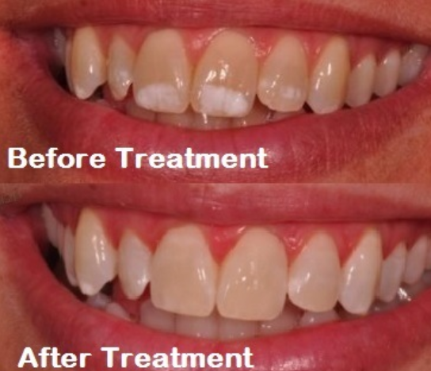
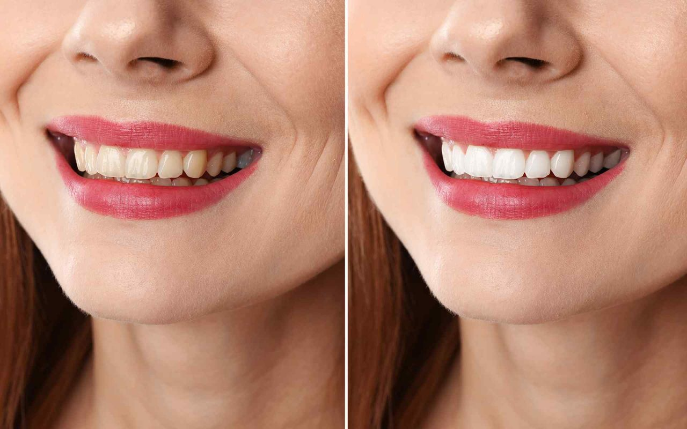

Dental Fluorosis
Dental Fluorosis refers to changes in the appearance of teeth caused by overexposure to fluoride, particularly during the period when permanent teeth are forming under the gums (usually between 3 months and 8 years of age). Once the teeth break through the gums, enamel fluorosis cannot develop further, but the stains and spots left by fluorosis are permanent and may darken over time.
Causes of Dental Fluorosis:
The main cause of dental fluorosis is water fluoridation, which is usually an aesthetic concern. Severe cases can result from exposure to water with fluoride levels exceeding the recommended amounts, or other sources of fluoride, such as:
Brick tea or high-fluoride coal pollution.
Fluoridated mouth rinses and toothpastes.
Bottled water not tested for fluoride content.
Inappropriate fluoride supplements usage.
Ingestion of foods, especially those imported from other countries with higher fluoride levels.
Public water fluoridation.
Classification:
- Very Mild: Small opaque, paper-white areas covering less than 25% of the tooth surface.
- Mild: Opaque white areas covering less than 50% of the tooth surface.
- Moderate: All surfaces are affected, showing brown staining and attrition of enamel.
- Severe: Shows marked pitting and brown spots affecting all the tooth surfaces.
Treatment
Dental fluorosis is cosmetically treatable. Different treatment options include:
Tooth Bleaching: Used for lighter cases and superficial staining.
Microabrasion: A procedure that removes surface stains for a smoother, whiter appearance.
Conservative Composite Restorations: Used for more severe cases where bleaching and microabrasion are not enough.
Porcelain Veneers: A more permanent solution for severe cases of fluorosis that result in unattractive discoloration.
Generally speaking, microabrasion and bleaching are utilized for superficial staining, while the more conservative restorations are used for more unaesthetic situations, such as severe fluorosis.
Micro abrasion and Tooth bleaching:
Conservative restorations and porcelain veneers:
A patient with moderate fluorosis presented with fluoride staining on the front teeth. The front six teeth were treated with cosmetic veneers to cover the staining and restore the natural appearance of the smile.
This treatment helped to correct the discoloration caused by fluorosis, providing an aesthetic solution and improving the patient's overall smile.
Flouride Belt In India
FAQ's
Will cosmetic crowns make my teeth weaker?
No, in fact placement of the crowns will protect your brittle teeth from the occlusal forces thereby increasing the life and functionality of your teeth.
Are Cosmetic Crowns a Permanent Solution?
Yes, cosmetic crowns can provide a long-lasting solution, especially when high-quality materials are used. However, the durability of the crown largely depends on proper oral hygiene, regular dental checkups, and maintaining a balanced bite. With good care, cosmetic crowns can last for many years, enhancing both the functionality and appearance of your teeth.
What Are the Different Types of Cosmetic Crowns Offered?
At our clinic, we offer two main types of cosmetic crowns: porcelain veneers and Zirconia crowns. More detailed information on these options can be found in the Crowns and Bridges section under General Dentistry on our website.
What is the difference between porcelain veneers and zirconia crowns?
Porcelain veneers are thin ceramic shells that cover only the front surface of your teeth, offering aesthetic improvement. On the other hand, zirconia crowns are much stronger and cover all surfaces of your teeth, providing both strength and durability.
Do cosmetic crowns stain?
No! Cosmetic crowns never stain. These crowns have polished surfaces, making them resistant to acids and staining. You can have any kind of food without having to worry about getting your teeth stained!
Is getting cosmetic crowns a painful procedure?
The procedure is absolutely pain-free once the numbness has taken its effect! After the local anesthesia is administered, there will be numbness making the entire procedure comfortable for you. You will walk out with temporaries in the same visit until the permanents are customized in the lab.
What are the treatment charges for cosmetic crowns?
Following are the charges for each crown:
- Zirconia crown costs Rs.12,000/-
- E-max crown costs Rs.10,000/-
- Veneers/Laminates Rs.12,000/-